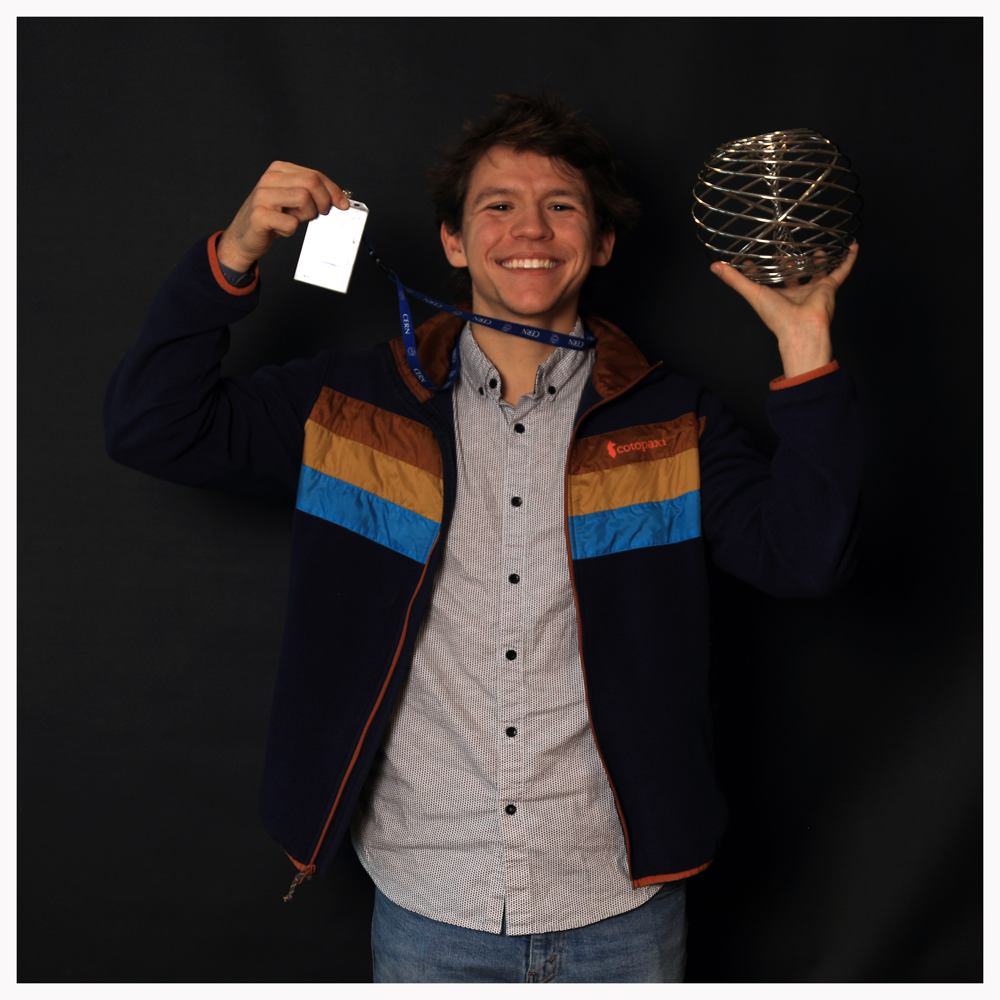

ATLAS VBS with W_L evidence

PhD student at Texas Tech
I am a Latvian-American physicist trying to better understand the fundamental universe using novel instrumentation and indirect probes for new physics. Outside of physics, I spend my time running, drinking coffee, and getting on my soapbox for no particular reason.
Currently, I work with Prof. Yongbin Feng on the CMS and DarkQuest experiments. This includes multiboson physics and work on the Phase 2 CMS upgrade (both hardware and reconstruction).

Download PDF Last updated August 2026
A nice future development for reconstructrion.
n_clicks = 0